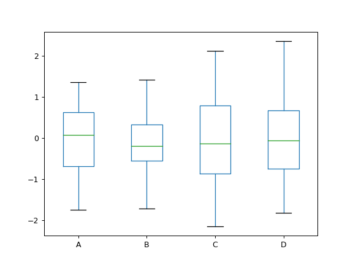

pandas.DataFrame.plot.box¶
-
DataFrame.plot.box(self, by=None, **kwargs)[source]¶ Make a box plot of the DataFrame columns.
A box plot is a method for graphically depicting groups of numerical data through their quartiles. The box extends from the Q1 to Q3 quartile values of the data, with a line at the median (Q2). The whiskers extend from the edges of box to show the range of the data. The position of the whiskers is set by default to 1.5*IQR (IQR = Q3 - Q1) from the edges of the box. Outlier points are those past the end of the whiskers.
For further details see Wikipedia’s entry for boxplot.
A consideration when using this chart is that the box and the whiskers can overlap, which is very common when plotting small sets of data.
- Parameters
- bystring or sequence
Column in the DataFrame to group by.
- **kwdsoptional
Additional keywords are documented in
DataFrame.plot().
- Returns
matplotlib.axes.Axesor numpy.ndarray of them
See also
DataFrame.boxplotAnother method to draw a box plot.
Series.plot.boxDraw a box plot from a Series object.
matplotlib.pyplot.boxplotDraw a box plot in matplotlib.
Examples
Draw a box plot from a DataFrame with four columns of randomly generated data.
>>> data = np.random.randn(25, 4) >>> df = pd.DataFrame(data, columns=list('ABCD')) >>> ax = df.plot.box()
